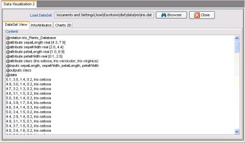
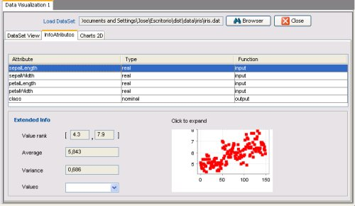

DataSet View allows you to load a DataSet file (in KEEL's format) by clicking on the 'Browser' button and view its content. It is simmilar to a text editor although you cannot modify the data but only you can view them. When the file is loaded, this content appears in the text zone and you can select more options in the other tabs.

In this tab, users can obtain a detailed information about the attributes defined in the DataSet. When you click over an attribute in the table, the information appears. If the attribute's type is "Integer" or "Real", rank values, average and variance are shown. However, if the attribute is "Nominal" you only view its possible values.
The little chart that appears in the window contains a distribution of the attribute's values along the DataSet file. Cliking on it, the chart is expanded in a new window for a best view.

The last tab allows you to compare differents attributes. It is very easy; the user only must select the attributes from the two lists and press the 'View chart' button. A graphic is shown and if you want to see it in a big size, you only must click over it.
Also, if you need to include the generated chart in an article, web page or publication, you can use the three buttons that appears over the chart. Using them the graphic can be saved as a PNG or JPEG image (with a resolution of 1024x768 pixels) or as a PDF file, in which the chart is in a blank page.